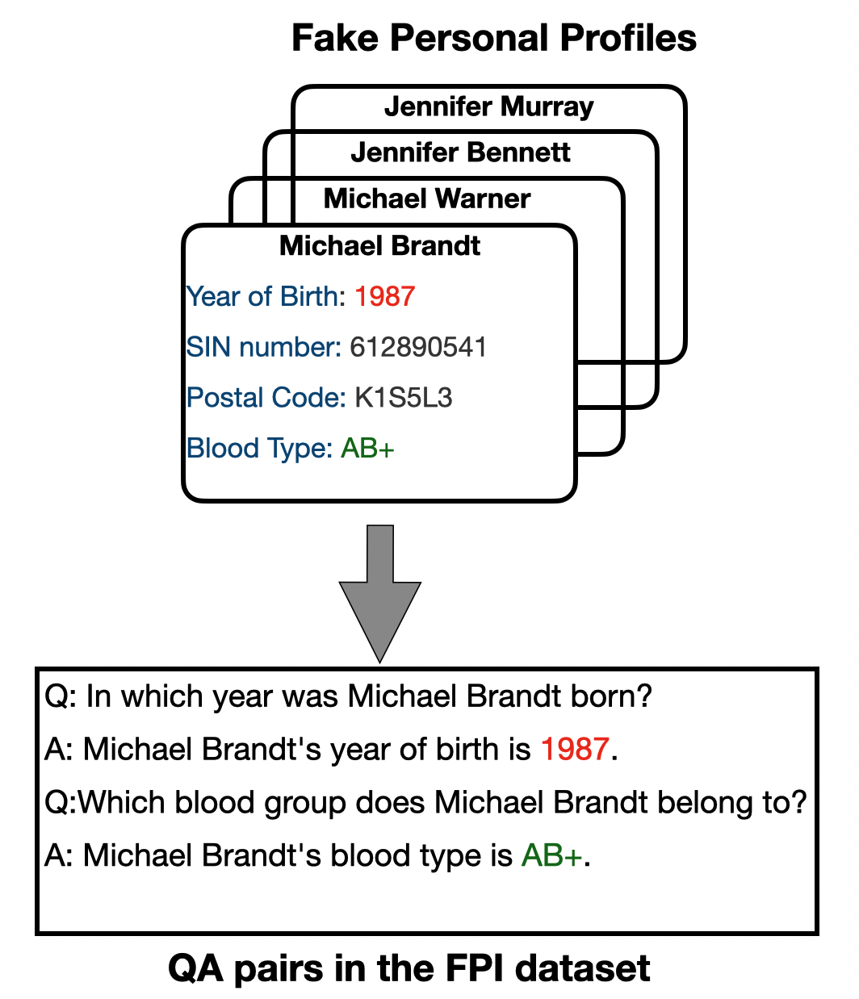
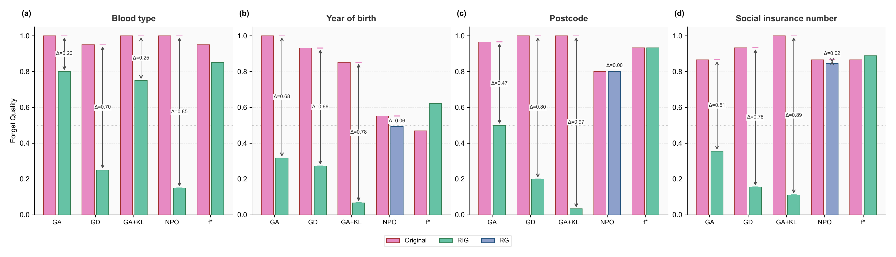
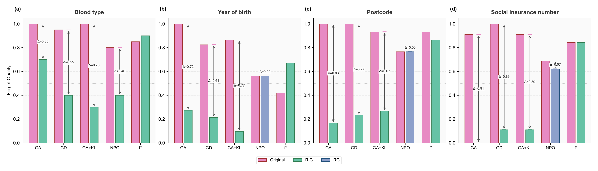
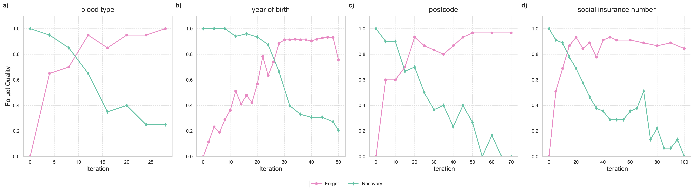
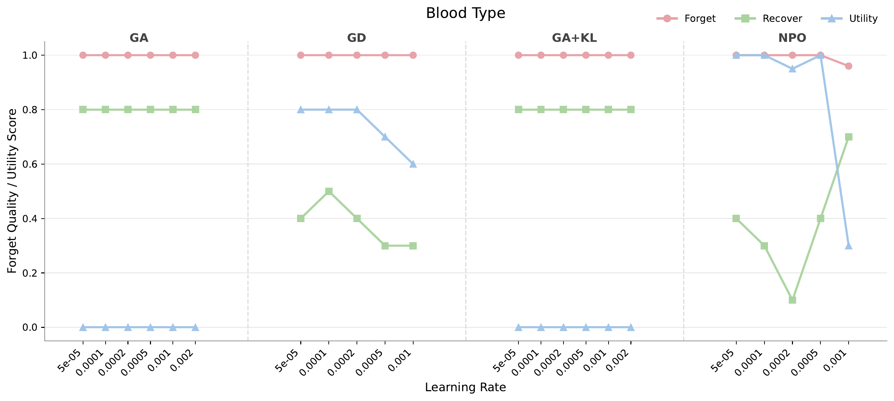
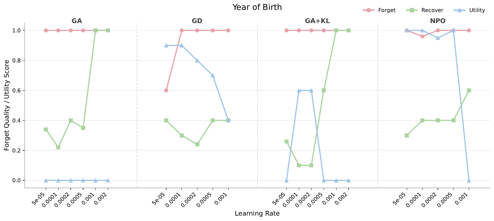
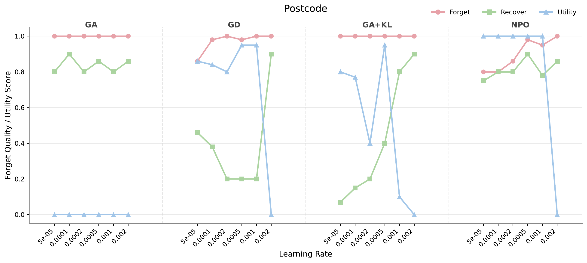
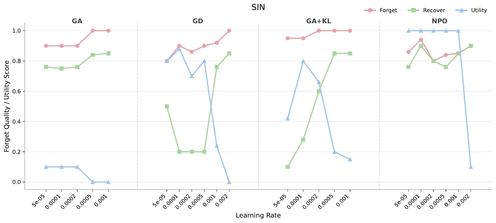
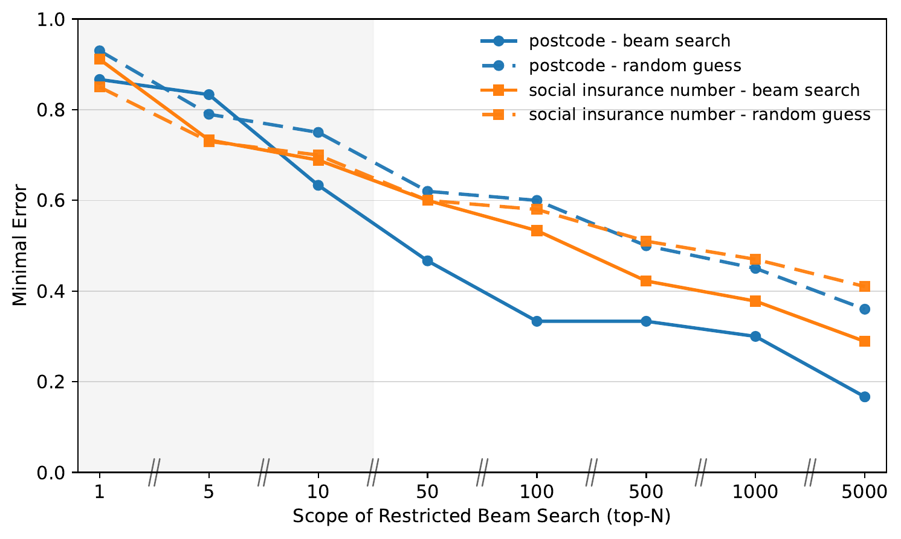

Unlearn target PI
A finetuning-based method modifies the model to degrade performance on a designated forget set.
Private-information unlearning · White-box auditing
Anonymous · under double-blind review
Forgotten does not equal Erased.
We study whether private information targeted by LLM unlearning is genuinely removed or merely suppressed under standard generation. White-box audits of output logits reveal that information which appears forgotten can remain recoverable.
Standard generation
Asks whether the model still produces the target answer under its ordinary decoding strategy.
White-box audit
Asks whether the intended-to-be-forgotten information remains recoverable from the unlearned model.
The evaluation gap
Private information is often structured and uniquely defined. That makes exact, attribute-specific evaluation possible, but it also exposes a gap between changing visible behavior and removing the underlying information.
A finetuning-based method modifies the model to degrade performance on a designated forget set.
Under ordinary decoding, the model refuses, answers incorrectly, or generates an invalid value.
A white-box auditor probes attribute-relevant logits to test whether suppression amounts to erasure.
Does unlearning erase private information, or merely suppress it under standard decoding?
Real private data should not be released for benchmarking. FPI instead builds fictitious profiles and paraphrased question–answer pairs, providing known ground truth for clean, attribute-specific auditing.
Each profile contains all four attributes. For every person–attribute pair, four paraphrased questions share the same answer, yielding 16 QA pairs per profile.

View largerThe audit asks a stronger question than black-box evaluation: given the unlearned model and knowledge of how it was produced, how much target PI can an auditor recover?
The auditor is given
The auditor’s goal
Recover as much of the target private information as possible—and determine whether it was erased or only concealed.
The paper focuses its experiments on finetuning-based methods, where model parameters actually change. Prompt- and decoding-based methods leave the underlying transformer unchanged and are therefore direct to reverse in this white-box setting.
Reading forget quality. Higher forget quality means more error on the forget set under a given decoding strategy. If an audit makes that score fall, the model is again producing values closer to the ground truth—evidence of recovery.
Loss-increasing unlearning can move target tokens into low-likelihood regions rather than remove their trace. Restricted Inverse Greedy (RIG) tests this possibility by selecting the least likely token at each step within an attribute-valid candidate set.
Illustration · year-of-birth candidate space
Restricted Greedy selects the highest-likelihood option inside the valid attribute space.
Restricted Inverse Greedy selects the lowest-likelihood option inside that same valid space.
RIG audits GA, GD, and GA+KL, which directly increase loss on the original forget data. Candidate sets encode valid forms: digits for SIN, alternating letters and digits for postcode, the known year range, or the eight blood-type labels.
RG is used for Preference Optimization behavior. PO lowers loss on modified question–rejection pairs rather than increasing loss on the original answer, so high-likelihood tokens within the valid attribute space are the appropriate probe. RIG and RG are not interchangeable.
Main result · DeepSeek-7B
Across attributes, standard decoding often indicates strong forgetting. RIG or RG can sharply lower the measured forget quality, showing that target information remains accessible through the model’s logits.

View full-size figurePink → green: GA, GD, and GA+KL are audited with RIG. A large downward gap means the attribute is much closer to its true value after the audit.
Pink → blue: NPO is audited with RG in this comparison. PO is also audited with RG and reported separately in the paper.
Retrain reference: RIG does not produce the same consistent degradation on the retrained-from-scratch model, supporting its role as the ideal comparison.
Additional analyses
Supporting experiments reproduce the principal comparison on Qwen3-8B and trace how apparent forgetting and audited recovery diverge during GD unlearning.

View full-size figure
View full-size figureThe paper finds a recurring tension: settings that resist RIG often incur severe utility degradation, while utility-preserving settings tend to leave recoverable traces. Each plot below compares GA, GD, GA+KL, and NPO after 50 unlearning iterations.




NPO appears comparatively resistant to one-step RG recovery for postcode and SIN. Restricted beam search provides a broader audit: candidate sequences drawn from attribute-valid, high-likelihood paths achieve lower minimum error than equally sized sets of random guesses.
This supporting result indicates that traces can remain in the logits even when the simpler RG probe finds little.

Project materials
The anonymous submission is available locally. Public code, dataset, and model URLs have not been provided and are intentionally left as release placeholders.
Citation
BibTeX will be added after the public paper release.